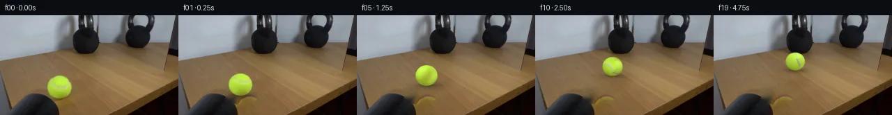
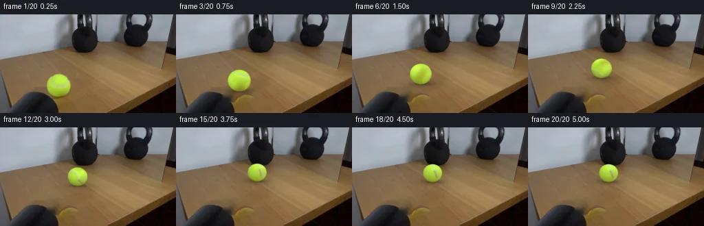
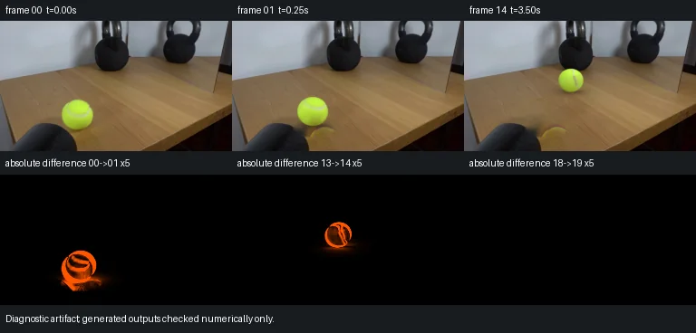

V0 · 初版 · 最终提交
![]()
Observable Generation Trace
把最终像素视频、Harness 冻结的每轮候选、真实工具事件和 Agent 自述放在同一页。可观测证据与模型自述分开标记，避免把“模型说它检查过”误当成真实工具调用。
![首帧]()
Static locked-off single-shot with fixed frame throughout filmed with constant framerate in real-time. The scene shows a realistic scientific demonstration. The scene only contains the described setup and actions. The 30lb kettlebell sits next to a mirror that reflects the kettlebell on a wooden table. The tennis ball rolls slowly towards the 30lb kettlebell next to a mirror and hits the kettlebell.
首帧显示在左侧播放器初始画面。Track 权限、隔离和 tensor 一致性来自 run manifest，而不是 METHOD.md。
默认勾选初版和最终版；可选其他版本一起同步播放。仅检查图更新的连续重复快照已合并，回退旧视频仍保留为一次修订。
Observable events
来源：events.jsonl + run manifest
此 Track 禁止读取输出图片。逐轮预览由外部 Harness 自动冻结，只用于事后审计，生成 Agent 当时看不到这些页面。
Frozen candidates
每张图来自该 round 的真实 00 / 01 / 05 / 10 / 19 帧

pixels 632cad5cfd9ca51c · code c1338bc1b9a559f2
--- previous/generate.py
+++ current/generate.py
@@ -0,0 +1,320 @@
+"""Pixel-only continuation of the supplied scientific demonstration.
+
+No model, renderer, engine, external image, or network is used. The source ball
+is resampled as a rotating spherical texture; the tabletop is reconstructed
+locally. All inspection after generation is numerical.
+"""
+from pathlib import Path
+import json
+import math
+import base64
+import re
+import numpy as np
+import cv2
+from PIL import Image, ImageDraw
+from artifact_io import save
+
+ROOT = Path(__file__).resolve().parent
+W, H = 256, 144
+SOURCE = np.array(Image.open(ROOT / 'first_frame.png').convert('RGB'))
+assert SOURCE.shape == (H, W, 3)
+YY, XX = np.indices((H, W), dtype=np.float64)
+C0 = np.array([85.4, 103.4])
+C1 = np.array([117.5, 65.3])
+R0 = np.array([17.4, 16.4])
+DEPTH = 17.4 / 13.7 - 1.0
+CONTACT = 14
+SUPER = 3
+
+
+def ellipse(cx, cy, rx, ry):
+ return ((XX-cx)/rx)**2 + ((YY-cy)/ry)**2
+
+
+# The union removes both the original sphere and its original cast shadow.
+footprint = (ellipse(*C0, 19.6, 18.6) < 1) | (ellipse(89, 120, 23.5, 9) < 1)
+repair_mask = (footprint.astype(np.uint8) * 255)
+inpainted = cv2.inpaint(SOURCE, repair_mask, 5, cv2.INPAINT_TELEA).astype(np.float64)
+# Directional wood grain comes from the same tabletop, displaced approximately
+# along its grain. Its high-frequency component is added to the smooth fill.
+source_low = cv2.GaussianBlur(SOURCE.astype(np.float64), (0, 0), 3.0)
+donor_high = SOURCE.astype(np.float64) - source_low
+mapx = (XX - 17).astype(np.float32)
+mapy = (YY - 30).astype(np.float32)
+donor = cv2.remap(donor_high.astype(np.float32), mapx, mapy,
+ cv2.INTER_CUBIC, borderMode=cv2.BORDER_REFLECT_101)
+smooth_fill = cv2.GaussianBlur(inpainted, (0, 0), 2.1)
+texture_fill = smooth_fill + 0.80 * donor
+# Pixels outside the repair mask are exactly the source. The narrow inner
+# feather joins the reconstructed grain to the original table.
+distance = cv2.distanceTransform(repair_mask, cv2.DIST_L2, 5)
+repair_alpha = np.clip(distance / 2.3, 0, 1)
+BACKGROUND = SOURCE.astype(float) * (1-repair_alpha[..., None]) + texture_fill * repair_alpha[..., None]
+BACKGROUND = np.clip(np.rint(BACKGROUND), 0, 255).astype(np.uint8)
+
+
+# Least-squares illumination from green felt, excluding the pale seam.
+u0 = (XX-C0[0])/R0[0]
+v0 = (C0[1]-YY)/R0[1]
+z0 = np.sqrt(np.maximum(0, 1-u0*u0-v0*v0))
+blue_green = SOURCE[..., 2].astype(float) / np.maximum(SOURCE[..., 1], 1)
+fit = (u0*u0+v0*v0 < .82**2) & (blue_green < .38)
+fit_design = np.stack([np.ones_like(XX), u0, v0, z0], axis=-1)
+LIGHT = np.linalg.lstsq(fit_design[fit], SOURCE[fit], rcond=None)[0]
+
+# Camera-coordinate floor normal and travel direction. Their cross product is
+# the rolling axis. The angular travel includes foreshortening of the ground.
+floor_normal = np.array([0., .9, math.sqrt(1-.9**2)])
+travel = np.array([.39, .402, -.826])
+travel -= floor_normal * np.dot(floor_normal, travel)
+travel /= np.linalg.norm(travel)
+AXIS = np.cross(floor_normal, travel)
+AXIS /= np.linalg.norm(AXIS)
+
+
+def rotation(angle):
+ x, y, z = AXIS
+ k = np.array([[0, -z, y], [z, 0, -x], [-y, x, 0]])
+ return np.eye(3) + math.sin(angle)*k + (1-math.cos(angle))*(k@k)
+
+
+def pose(t):
+ if t <= CONTACT:
+ f = t / CONTACT
+ q = f * (1.12 - .12*f)
+ progress = (1+DEPTH)*q/(1+DEPTH*q)
+ else:
+ # Low restitution against the massive stationary kettlebell. The
… diff truncated; 233 more lines …pixels 632cad5cfd9ca51c · code f2e15961fb559102
--- previous/generate.py
+++ current/generate.py
@@ -262,12 +262,17 @@
for t, f in enumerate(frames):
r, g, b = [f[..., k].astype(float) for k in range(3)]
green = (g-r>20) & (g-b>65) & (g>120)
- n, labels, stats, cents = cv2.connectedComponentsWithStats(green.astype(np.uint8), 8)
+ # The pale tennis seam can split a strict green-color mask. Close only
+ # narrow gaps for object counting, retaining raw green pixels for tracking.
+ connected_green = cv2.morphologyEx(green.astype(np.uint8), cv2.MORPH_CLOSE,
+ np.ones((3,3), np.uint8))
+ n, labels, stats, cents = cv2.connectedComponentsWithStats(connected_green, 8)
significant = [j for j in range(1, n) if stats[j, cv2.CC_STAT_AREA] >= 10]
assert len(significant) == 1, (t, significant)
j = significant[0]
- centroids.append(cents[j].tolist())
- areas.append(int(stats[j, cv2.CC_STAT_AREA]))
+ gy, gx = np.where(green)
+ centroids.append([float(gx.mean()), float(gy.mean())])
+ areas.append(int(green.sum()))
component_counts.append(len(significant))
# No colored source-ball remnant outside the moving object.
if t:Final visual checks
Harness 保存的最终产物


Agent claims
以下文字由生成 Agent 撰写，不等同于工具证据
The supplied 256 × 144 RGB image is the only visual reference. Measurements below are from the attached initial view and local RGB calculations. No generated images will be opened with image Read/View tools.
All samples have a 0.25 second interval. Frame 00 is the exact original. A perspective projection of an approximately constant, gently declining world speed supplies intermediate positions. Source-derived spherical texture rotates with travel; apparent size declines with depth. No cuts, camera movement, extra objects, or kettle motion.
| Frame | Time (s) | Event |
|---|---|---|
| 00 | 0.00 | Exact input; ball at (85.4,103.4). |
| 01 | 0.25 | Ball begins/continues its slow forward roll, roughly (88.6,99.6). |
| 02 | 0.50 | Rolls to roughly (91.7,95.9), seam rotates. |
| 03 | 0.75 | Rolls to roughly (94.5,92.5). |
| 04 | 1.00 | Rolls to roughly (97.3,89.3). |
| 05 | 1.25 | Rolls to roughly (99.8,86.3). |
| 06 | 1.50 | Rolls to roughly (102.2,83.4). |
| 07 | 1.75 | Rolls to roughly (104.5,80.7). |
| 08 | 2.00 | Rolls to roughly (106.7,78.1). |
| 09 | 2.25 | Rolls to roughly (108.8,75.6). |
| 10 | 2.50 | Rolls to roughly (110.7,73.3). |
| 11 | 2.75 | Rolls to roughly (112.6,71.1). |
| 12 | 3.00 | Nears the kettle around (114.3,69.1). |
| 13 | 3.25 | Last approach sample around (115.9,67.2). |
| 14 | 3.50 | Gentle contact at (117.5,65.3); the heavy kettle stays fixed. |
| 15 | 3.75 | Small low-energy rebound, less than one pixel. |
| 16 | 4.00 | Rebound slows; total retreat remains about one pixel. |
| 17 | 4.25 | Ball finishes settling near the kettle. |
| 18 | 4.50 | Ball rests; table, kettle, and mirror remain fixed. |
| 19 | 4.75 | Same settled pose, ending the five-second clip. |
Use only local Python pixel operations: reconstruct the source ball's footprint from nearby tabletop pixels, sample the source ball as a spherical texture with fitted illumination, rotate that texture analytically, scale/translate the ball under perspective, and composite soft traveling shadows. Calibrate and clip a mirror projection. Review with numeric geometry, color/component tracking, frame-difference bounds, tensor/PNG comparisons, and encoded-player checks. Write the required contact sheet and transition diagnostic without viewing them.
This continuation uses local Python image operations on first_frame.png only. The prompt supplies the intended action. There are no external images, networks, models, rendering engines, or agents. The attached initial image was available visually; all generated images were inspected only by local code and numerical checks.
generate.py loads the source as RGB and retains it verbatim for frame 00. The fixed scene comes from the original photograph. A local elliptical mask removes the original tennis ball and its shadow. OpenCV Telea inpainting reconstructs the low-frequency tabletop color. High-frequency grain is copied from nearby source-table pixels, displaced by (-17,-30) pixels, and blended into that repair with a narrow inner feather. The foreground object, table edges, black kettlebell, and mirror are preserved.
The tennis ball is represented by an analytically projected sphere, initially centered at (85.4,103.4), with image radii (17.4,16.4). A least-squares RGB illumination function is fitted from its original green felt, excluding the pale seam. The original ball pixels then serve as its surface texture. Rotating surface normals select source texture coordinates, and the fitted stationary illumination is reapplied. The unseen hemisphere uses a mirrored continuation of the photographed hemisphere. Sampling near the source silhouette is limited to avoid transferring brown background into the felt. Nine subpixel samples per output pixel and a soft boundary supply antialiasing. This preserves photographic surface variation and rotates the pale seam without an external renderer.
A gently declining speed in a depth parameter drives the roll. Perspective reduces the ball's radii to (13.7,12.91) at contact and moves its center to (117.5,65.3) at frame 14, 3.5 seconds. Rotation reaches 4.4 radians at contact, around a rolling axis derived from a camera-coordinate floor normal and travel direction. Compact elliptical shadows move with the ball. The ball composites in front of the kettlebell's lower silhouette. A small rebound retreats about 1.25 image pixels in total; the ball reaches its final resting pose at frame 17. The heavy kettlebell remains fixed.
The mirror uses a projective planar reflection calibrated from real and reflected kettle contacts (123,55) and (198,47), and the mirror/table edge (135,39)–(237,81). The transformation is an involution. Ball reflections are projected and clipped to the visible mirror polygon. Their visible coverage is zero along this path: even at contact the reflected ball's leftmost edge is x=250.56, beyond the mirror's sloping right edge. The original reflected kettle consequently remains exact in every frame.
These are fitted image-space geometry and analytic kinematics. Hidden texture, depth calibration, illumination separation, and mirror geometry are approximations inferred from one photograph.
pixels.npz: uint32 array named pixels, shape (144,256,20), containing 0xRRGGBB values.frames/00.png through frames/19.png: 20 RGB PNGs, 256 × 144 pixels.inspection.png: eight-frame contact sheet.transition_check.png: sample frames and amplified consecutive-frame difference maps.index.html: standalone local player with exact tensor-derived pixels and 250 ms playback intervals.OBSERVATION.md: scene measurements and the event plan written before generator code.generate.py: reproducible generator and numerical validation.validation.json: per-frame poses, color tracking, reflection coverage, and export/continuity results.Generation and all assertions complete successfully:
The saved contact sheet and transition diagnostic were produced but were not opened with image Read/View tools. These checks establish export integrity, measured motion, scene invariance, and local color continuity; no generated-output visual review is claimed.